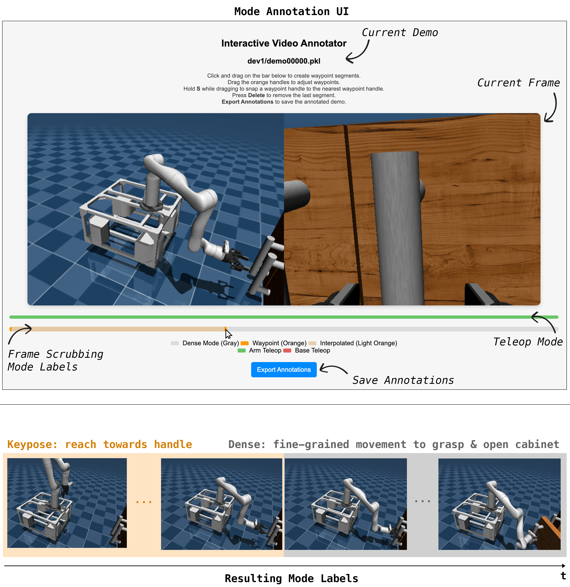
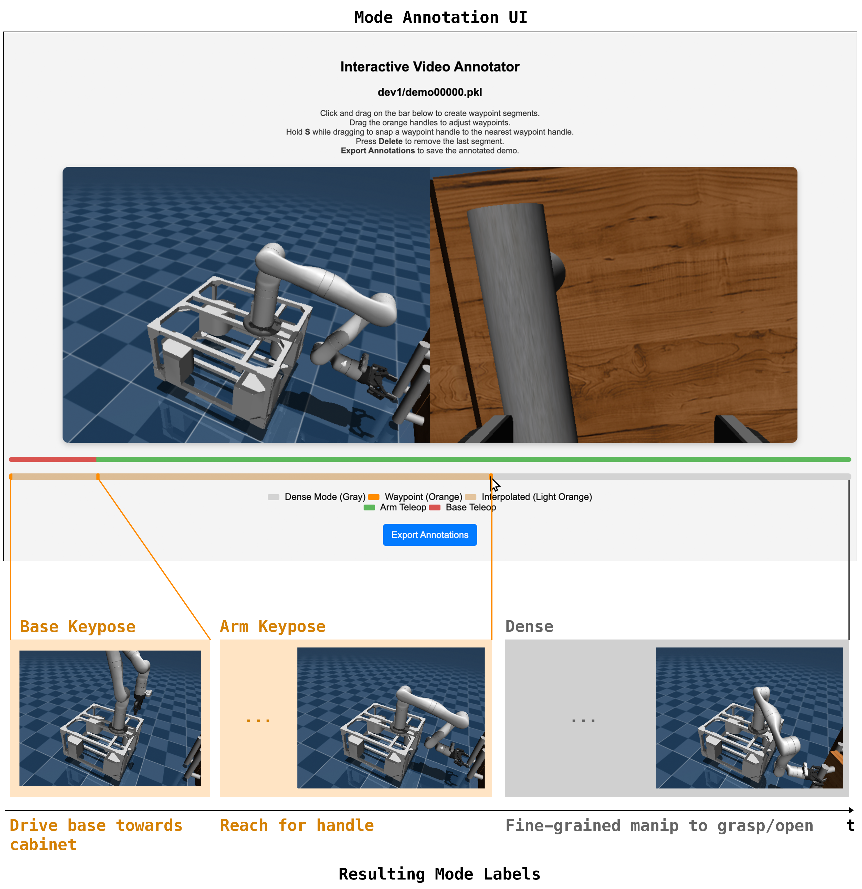
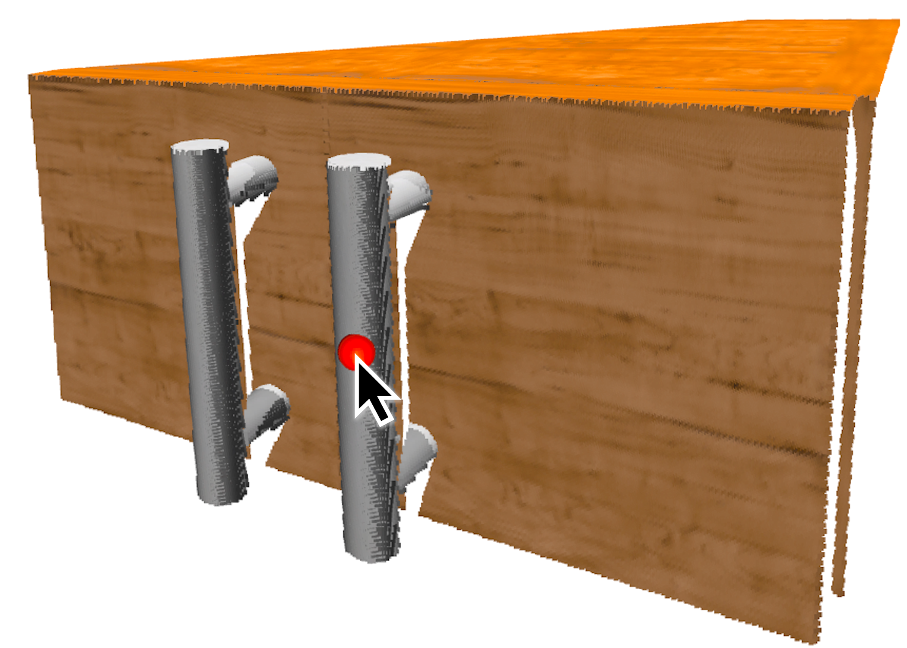
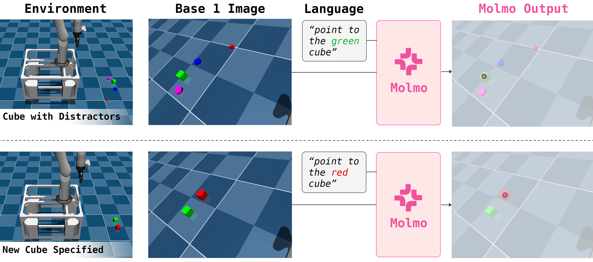

We implement the whole-body controller (WBC) described in Sec. 3.2 using MuJoCo [1] and the mink inverse kinematics library [2].
Model and Tasks.
We load the MuJoCo model of the robot, with two camera mounts attached to the base, from an MJCF file. The WBC includes the following tasks:
Constraints.
We enforce the following limits during IK:
Solver parameters.
We solve the IK problem using mink's QP solver with a Levenberg-Marquardt damping factor of 1.0. The solver runs for up to 20 iterations with a convergence threshold of 10-4 for both position and orientation errors. Joint velocities are integrated using Euler integration.
Usage.
At runtime, the solver takes as input a desired end-effector pose and the current joint configuration, and returns a joint position command by solving the constrained IK problem and integrating the resulting joint velocities. All weights and thresholds are fixed and reused across all tasks without any per-task tuning.
We implement the keypose policy using a Transformer that operates on point clouds to predict a 6-DoF end-effector pose. The policy first classifies per-point saliency and then regresses a per-point offset to the target end-effector position. Rotation (as quaternions), gripper state, and control mode are predicted using additional learnable tokens. The network architecture uses 6 Transformer layers with 512-dimensional embeddings and 8 attention heads. No positional encodings are used, as the point cloud input is unordered.
Following [3], the full training objective is a simple unweighted sum of the following: (1) salient point classification loss, (2) offset regression loss on high-saliency points, (3) MSE on normalized quaternions, (4) binary cross-entropy on gripper state, and (5) cross-entropy loss on control mode.
We apply temporal augmentation by including intermediate steps from the controller’s motion trajectory toward each annotated keypose. For each waypoint segment, we train not only on the initial observation but also on a prefix of the interpolated segment. We use α = 0.2, meaning we sample the first 20% of timesteps in the segment. This increases the data sixfold in most cases and improves performance across tasks.
Additionally, we apply spatial augmentations by randomly translating the entire point cloud and corresponding action label within a 5 cm cube. No vision-based pre-processing or segmentation is used beyond cropping to workspace bounds. We train for 2000 epochs using Adam with a base learning rate of 1e-4 and cosine decay, gradient clipping (max norm 1), dropout of 0.1, batch size 64, and exponential moving average (EMA) with decay annealed up to 0.9999. All evaluations use the final checkpoint.
Training the keypose policy requires labels for modes and salient points. We provide these annotations on teleoperated demonstrations using a lightweight custom interface. Annotators segment each demonstration into keypose and dense control modes by clicking and dragging on a timeline. For frames labeled as keypose, annotators then specify a salient point by clicking on a task-relevant location in the 3D point cloud. Each demonstration typically contains 1–3 such annotations, and full annotation of a 20-demo dataset takes around 15 minutes. These labels supervise both the saliency classification and offset regression components of the keypose policy.



To improve robustness and generalization, we extend the keypose policy to accept externally specified salient points rather than learning to predict them from scratch. These points are encoded as a soft saliency map over the input point cloud and allow the keypose model to attend to a pre-specified point.
We train this variant with a masked supervision strategy. 50% of the time, we include the saliency map, and the policy learns to predict actions relative to given salient points when available. In the other 50%, we mask out the saliency map, and the model learns to predict the map in addition to the action, to encourage learning useful features of the point cloud. Data augmentations (color removal, distractor points) are applied to improve robustness.

We implement the dense policy using a diffusion model that predicts fine-grained delta end-effector motions. Following [4], we use a ResNet-18 encoder to process RGB images and append proprioceptive features before passing them to a 1D convolutional UNet denoiser. The model is trained using DDPM to predict noise added to delta action sequences.
At test time, the policy predicts a future horizon of 16 actions and executes the first 8 before replanning. Observations include third-person and wrist-mounted RGB images. The final checkpoint is used for evaluation.